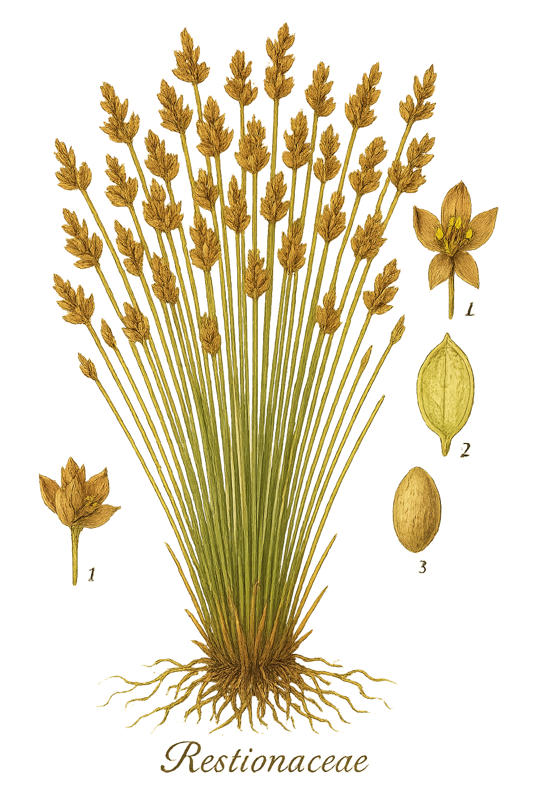

Restionaceae
Restio Family / Cape Reed Family
Restionaceae is a large family of monocotyledonous, perennial, grass-like or rush-like herbs, predominantly found in the Southern Hemisphere. Major centers of diversity are the Cape Floristic Region of South Africa and southwestern/southeastern Australia, with fewer species in New Zealand, Southeast Asia, and Chile. They are typically adapted to nutrient-poor, fire-prone environments. Key features include highly reduced leaves (often just sheaths), photosynthetic stems (culms), small, wind-pollinated flowers grouped into spikelets within larger inflorescences, and a predominantly dioecious reproductive system (separate male and female plants).
Overview
The Restionaceae family, often called "restios," comprises around 58 genera and over 500 species. They are ecologically significant components of specific biomes, particularly the fynbos of South Africa and the heathlands and sedgelands of Australia, where they often dominate in terms of biomass and species diversity on nutrient-impoverished soils. Their rhizomatous growth habit and tolerance of fire make them well-suited to these fire-prone ecosystems.
Morphologically, they exhibit convergent evolution with grasses (Poaceae), sedges (Cyperaceae), and rushes (Juncaceae), adopting a similar overall growth form and wind-pollination strategy. However, the combination of reduced leaves, photosynthetic culms, dioecy, and specific spikelet structures distinguishes them. The often intricate and architecturally interesting culms and inflorescences have made many species popular in horticulture, especially in Mediterranean climates and xeriscaping.
The family's striking Gondwanan distribution pattern, with major centers in Africa and Australia, provides important evidence for understanding the breakup of the ancient supercontinent and subsequent plant diversification.
Quick Facts
- Scientific Name: Restionaceae
- Common Name: Restio Family, Cape Reed Family
- Number of Genera: Approximately 58
- Number of Species: Approximately 520
- Distribution: Predominantly Southern Hemisphere (esp. South Africa, Australia), also NZ, SE Asia, Chile.
- Evolutionary Group: Monocots - Poales
- Habitat: Nutrient-poor soils, fire-prone ecosystems (fynbos, heathlands), often seasonally wet or dry areas.
Key Characteristics
Growth Form and Habit
Perennial, rhizomatous herbs, often forming dense tussocks or clumps. Appearance is generally grass-like or rush-like.
Leaves
Leaves are highly reduced, typically consisting only of sheaths clasping the stem at the nodes, often with a small, non-functional blade or scale. Basal leaves may be present in seedlings but usually wither early. Photosynthesis is primarily carried out by the stems.
Stems (Culms)
Stems (called culms) are the main photosynthetic organs. They are typically erect, simple or branched, round, flattened, or angled in cross-section, and can be solid or hollow. Culms possess distinct nodes and internodes, with leaf sheaths present at the nodes.
Roots
Fibrous root system, arising from underground rhizomes which allow for vegetative spread and survival after fire.
Sexuality and Inflorescence
Plants are mostly dioecious (male and female flowers on separate plants), though some species are monoecious. Flowers are grouped into small units called spikelets, which contain glume-like bracts. These spikelets are further aggregated into larger, often complex inflorescences such as panicles, racemes, or spikes. Male and female inflorescences often differ significantly in size and appearance (sexual dimorphism).
Flowers
Flowers are small, inconspicuous, unisexual, and adapted for wind pollination (anemophilous). They are typically 3-merous (parts in threes), sometimes 2-merous.
- Perianth (Tepals): Usually consists of 6 small, dry, membranous or chaffy (glume-like) tepals arranged in two whorls of 3. Sometimes fewer (4) or absent.
- Male Flowers: Typically possess 3 stamens (sometimes 1, 2, or rarely 6); filaments are free; anthers usually have 1 locule (theca) and open by a longitudinal slit. A rudimentary ovary (pistillode) may be present.
- Female Flowers: Lack functional stamens (staminodes may be present). Possess a superior ovary composed of (1-)2-3 fused carpels, forming a 1-3 locular ovary. Styles are usually 2 or 3, often free or fused only at the base, with frequently feathery stigmas to catch airborne pollen.
Fruits and Seeds
The fruit is typically a loculicidal capsule (splitting along the locule walls) or less commonly an indehiscent achene or nutlet. Seeds are usually small, with one seed per locule.
Chemical Characteristics
Stems and leaves often contain abundant silica bodies, providing structural support and potentially deterring herbivores. Lignified tissues are common. No specific, widely distributed chemical markers like glucosinolates or unique saponins are characteristic of the family as a whole.
Field Identification
Identifying Restionaceae involves recognizing their distinctive graminoid (grass/rush-like) habit combined with reduced leaves, photosynthetic stems, specific inflorescence structures, and geographical distribution:
Primary Identification Features
- Habit: Perennial, rhizomatous herbs forming tussocks, resembling grasses or rushes.
- Leaves: Reduced to sheaths/scales along the stem; functional leaf blades usually absent.
- Stems (Culms): Green and photosynthetic, often the dominant vegetative feature, can be round, flat, branched or unbranched.
- Inflorescence: Flowers grouped in spikelets, which are arranged in larger panicles, racemes, etc.
- Dioecious Nature: Male and female plants usually separate and often look different, especially their inflorescences.
- Distribution: Predominantly Southern Hemisphere (esp. South Africa Cape Region, Australia).
Secondary Identification Features
- Flower Structure: Small, wind-pollinated flowers with 6 (usually) chaffy tepals, 3 stamens (male), 2-3 styles/stigmas (female). Requires magnification.
- Habitat: Found in nutrient-poor, often sandy or peaty soils, in fire-prone vegetation like fynbos or heathland.
- Rhizomes: Presence of underground spreading stems.
Seasonal Identification Tips
- Flowering/Fruiting Season: Varies greatly by species and location, often linked to rainfall patterns or post-fire responses. Inflorescences are key for identification.
- Vegetative State: The distinctive culms and reduced leaves are present year-round. Culm shape, branching pattern, and sheath appearance are useful vegetative characters.
Common Confusion Points
Restionaceae are often confused with other graminoid monocots:
- Poaceae (Grass family): Grasses typically have leaves differentiated into sheath, ligule, and blade (though blades can be reduced). Flowers (florets) are highly specialized, enclosed by lemma and palea, usually bisexual, and fruit is a caryopsis (grain).
- Cyperaceae (Sedge family): Sedges often have triangular stems (sometimes round), solid pith, and 3-ranked leaves (sheath usually closed). Flowers are subtended by a single bract (scale), lack a perianth or have bristles/scales, and fruit is an achene. Often bisexual flowers.
- Juncaceae (Rush family): Rushes often have round, solid stems (sometimes hollow/septate leaves). Flowers are typically bisexual, actinomorphic, with 6 distinct brownish tepals, and fruit is a capsule usually containing multiple seeds.
The combination of reduced leaves/photosynthetic culms, dioecy, and spikelet structure within larger inflorescences helps distinguish Restionaceae.
Field Guide Quick Reference
Look For:
- Perennial grass/rush-like herb
- Leaves reduced to sheaths/scales
- Stems (culms) green, photosynthetic
- Flowers in spikelets
- Spikelets in larger inflorescences
- Mostly dioecious (separate M/F plants)
- Flowers small, 6 tepals, 3 stamens (M), 2-3 styles (F)
- Fruit a capsule or achene/nutlet
- Habitat: S. Hemisphere, nutrient-poor soils
Key Variations:
- Culm shape (round, flat, winged)
- Culm branching (simple vs. branched)
- Inflorescence structure (panicle, raceme, etc.)
- Appearance of male vs. female plants
Notable Examples
Many Restionaceae are ecologically dominant or horticulturally significant:

Chondropetalum tectorum
Cape Thatching Reed (Small Cape Reed)
(Often sold horticulturally as Elegia tectorum). Native to the Cape region of South Africa. Forms dense clumps of upright, unbranched, dark green culms. Popular landscaping plant for its architectural form and tolerance of various conditions. Historically used for thatching roofs.

Baloskion tetraphyllum
Tassel Cord Rush
A common species in eastern Australia, found in damp heathlands and swamps. Recognizable by its branched culms bearing whorls of fine, sterile branchlets, giving it a feathery appearance. Produces drooping, tassel-like inflorescences.

Elegia capensis
Horsetail Restio
Another striking South African species, known for its tall culms with whorls of drooping, sterile, hair-like branches at the nodes, resembling a horsetail (Equisetum). Often used as an accent plant in gardens.
Phylogeny and Classification
Restionaceae is a well-established family within the large monocot order Poales. Molecular studies place it firmly within the "graminoid clade" (grasses and their relatives). It is considered part of a distinct Southern Hemisphere clade that also includes the smaller families Anarthriaceae and Centrolepidaceae (sometimes Ecdeiocoleaceae is also included here). This entire group (Restionaceae + Anarthriaceae + Centrolepidaceae) is often found to be sister to the massive grass family, Poaceae.
The family likely originated in Gondwana before its breakup, explaining the current distribution pattern concentrated in Africa, Australia, and South America. The diversification into many genera and species, particularly in the Cape Floristic Region and Southwestern Australia, highlights significant evolutionary radiations in these biodiversity hotspots, likely driven by adaptation to nutrient-poor soils and fire regimes.
Position in Plant Phylogeny
- Kingdom: Plantae
- Clade: Angiosperms (Flowering plants)
- Clade: Monocots
- Order: Poales
- Family: Restionaceae
Evolutionary Significance
Restionaceae is significant for understanding monocot evolution and ecology:
- Gondwanan Distribution: A classic example of a plant family with origins tied to the ancient southern supercontinent.
- Radiation in Nutrient-Poor Environments: Demonstrates successful adaptation and diversification in challenging habitats like fynbos and Australian heathlands.
- Fire Adaptation: Many species possess adaptations (like rhizomes) allowing them to survive and thrive in fire-prone ecosystems.
- Convergent Evolution: Provides a striking example of convergence with unrelated graminoid families (grasses, sedges, rushes) in adopting a similar growth form and wind-pollination syndrome.
- Phylogenetic Link to Grasses: Its close relationship to Poaceae helps illuminate the evolutionary origins of the grass family.